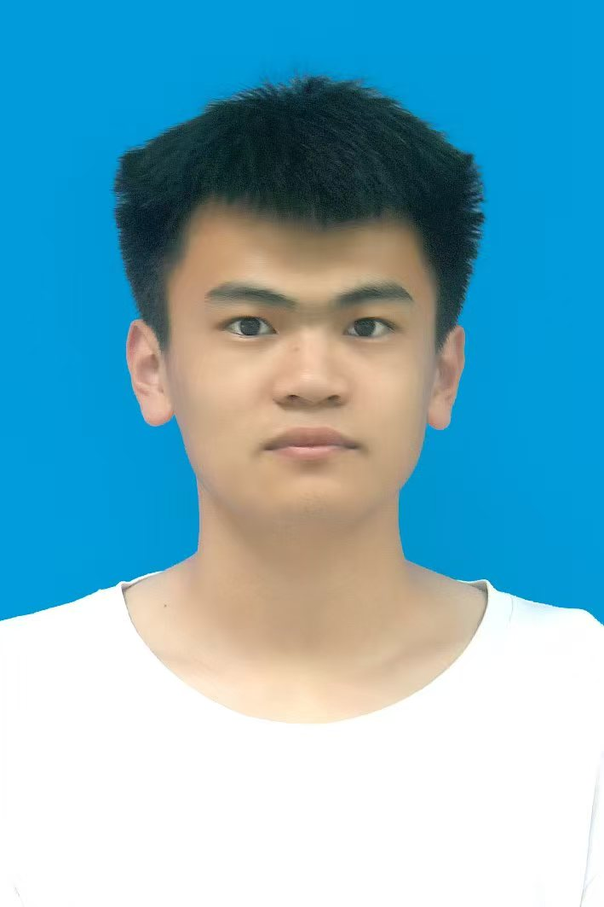

| 基本信息 < | 王昕炀 | 秋收 |
|---|---|---|
| 学号 | 338 | |
| 头像 |  | |
| 实验室序号 | 54 |
2025年软件杯大赛本科组-XX智能推荐系统设计与实现
该项目旨在基于用户行为数据和兴趣标签，构建一套精准的智能推荐算法。我主要负责算法模型的设计与优化，通过融合协同过滤和深度学习技术，提升推荐准确率约20%。在项目过程中，我熟练掌握了Python数据分析库和TensorFlow框架，也锻炼了团队协作和问题解决能力。
我是一个对技术充满热情、善于学习且富有责任心的人。在专业学习上，我始终保持着积极进取的态度，对Web前端开发、数据分析等领域有着浓厚的兴趣，且具备扎实的理论基础和实践能力。在团队协作中，我能够清晰地表达自己的想法，同时也乐于倾听他人的意见，善于协调团队资源，确保项目高效推进。生活中，我乐观开朗，具有良好的抗压能力，面对挑战时能够保持冷静并积极寻找解决方案。我始终坚信，持续学习和不断反思是成长的关键，未来我也将继续在技术道路上深耕，不断提升自己的综合素养，努力成为一名优秀的技术人才。